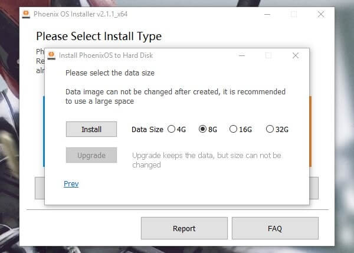

Step1: Run Phoenix OS Installer on your Windows PC, the Setup wizard will open you’ll get three option.
Step2: USB DRIVE – If you want to install it on USB Drive then choose to Make U-Disk and then select Drive and choose Write option. After that simply reboot the system and choose Phoenix OS from the boot menu.
There are dozens of Partition manager software available on the internet, but you don’t need to download any third – party software. Windows comes with the inbuilt option that known as Shrink Volume.
There is two way to run Phoneix OS on your Windows PC, You can use pen drive else You can Install Phoenix OS on created partition. If you don’t have space to shrink then USB Drive is the best option.
Step1: Run Phoenix OS Installer on your Windows PC, the Setup wizard will open you’ll get three option.
Step2: USB DRIVE – If you want to install it on USB Drive then choose to Make U-Disk and then select Drive and choose Write option. After that simply reboot the system and choose Phoenix OS from the boot menu.
Else
HARD DISK – Want to Install it in your Hard Disk then choose to Install then select the volume that you created then hit the Write option. (Mine created Volume is I, check what is yours then choose otherwise you’ll lose data)
step3:Another window will open it will ask you data size you can choose between 4 to 32GB. If you created 32 GB + volume then choose else 4-8GB is enough for 20 GB drive.

The installation process will take almost 10-20 minutes depending on your computer performance. And whenever process will get complete a Windows will open with sucess message.
After completion of the process, it will ask you to reboot the system and choose Phoenix OS from Boot manager.
If you’re using HP laptop then you’ll face Verification Failed (15) Acces denied error – To fix this error go to Bios setting and then disable Secure Boot. After that restart your PC and press Esc and delete to enter into the BIOS setup and choose Phoenix OS.
Wait for 5 minutes Phoenix OS will boot up, Now select English and setup WiFI and user Info and Done. Enjoy Android Nougat on your Windows PC, If you want to exit then simply shut down Phoenix OS and then on PC to enter into Windows.
Want to remove Phoenix OS completly from your Hard Disk.? Here is quick guide –
Run Phoenix OS Installer and then choose Uninstall Button. It will uninstall Phoenix OS within a Minute. Or if you installed on USB Drive then go to My computer > Right click on USB Drive and then Choose Format option. It will remove all Phoenix OS data from your USB Drive.
If you have ISO file of Phoenix OS then use Rufus tool to create Bootable USB of Phoenix OS.